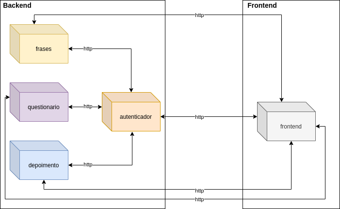

Documento de Arquitetura de Software
Histórico de Revisão
| Data | Versão | Descrição | Autor(es) |
|---|---|---|---|
| 08/03/2021 | 0.1 | Adicionado template do documento | Victor |
Sumário
1.3 Definições, Acrônimos e Abreviações
3. Restrições e Metas Arquiteturais
1. Introdução
1.1 Objetivo
1.2 Escopo
1.3 Definições, Acrônimos e Abreviações
1.4 Referências
1.5 Visao Geral
2 Representação Arquitetural
